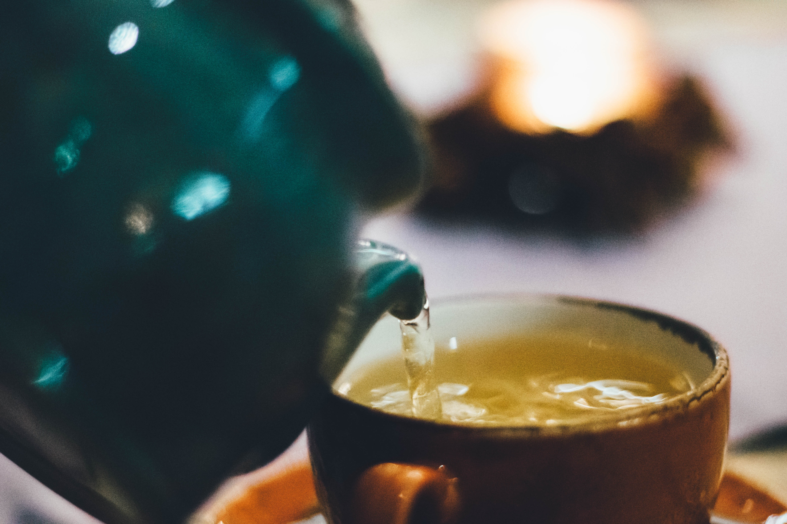

At OUI Café, we believe that life’s beauty lies in simplicity. Inspired by the elegance of French culture, our philosophy is to create a space where every detail invites you to slow down, breathe, and savor the moment.

We are more than a café. OUI is a state of mind — a quiet celebration of elegance, warmth, and openness. From the aroma of freshly brewed coffee to the delicate flakiness of a croissant, everything we serve is chosen with care and attention.
Here, calm and class meet. Whether you come for a morning espresso, a slow afternoon tea, or a sweet French treat, OUI is a place to say "yes" to life's little pleasures.
